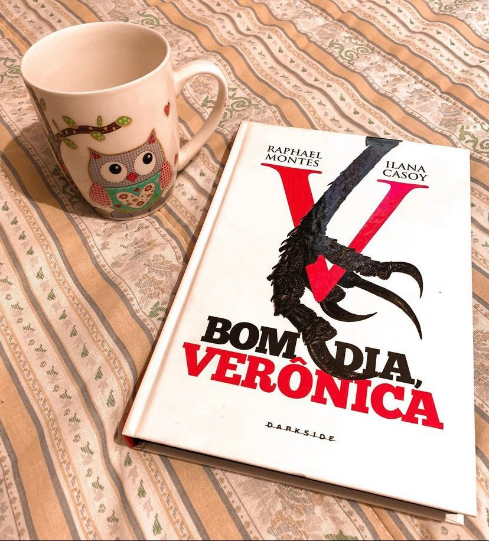

Bom dia, Verônica
⚠️Gatilhos: Suicídio, Violência Doméstica, abuso sexual.
A rotina da secretária de polícia Verônica Torres era pacata, burocrática e repleta de sonhos interrompidos até aquela manhã. Um abismo se abre diante de seus pés de uma hora para outra quando, na mesma semana, ela presencia um suicídio inesperado e recebe a ligação anônima de uma mulher clamando por sua vida. Verônica sente um verdadeiro calafrio, mas abraça a oportunidade de mostrar suas habilidades investigativas e decide mergulhar sozinha nos dois casos. Um turbilhão de acontecimentos inesperados é desencadeado e a levam a um encontro com lado mais sombrio do coração humano.
Esse thriller maravilhoso escrito a quatro mãos pela nossa rainha brasileira do True Crime Ilana Casoy e pelo já consagrado Raphael Montes (já teve suas obras publicadas em outros países diga-se de passagem) virou série pela Netflix contando com nomes como: Tainá Müller, Camila Morgado e Eduardo Moscovis.
A narrativa é alternada entre primeira pessoa (protagonista Verônica) e terceira pessoa, e preciso confessar que apesar de ter adorado a trama eu detestei a protagonista literária.
O livro é um ótimo suspense e com toda certeza vai agradar aos fãs de histórias com investigação policial.
O final é bem construído e fecham o livro de forma satisfatória porém deixa um gancho para continuação, o que não atrapalha a experiência ! Preciso destacar aqui que, o livro é muito mais denso e pesado que a série contando com cenas grotescas que podem causar incômodo ao leitor.
Curiosidade: Originalmente, o livro foi publicado com o pseudônimo de Andrea Killmore, em 2016. Raphael Montes e Ilana Casoy revelaram ser os reais autores do livro somente em 2019.